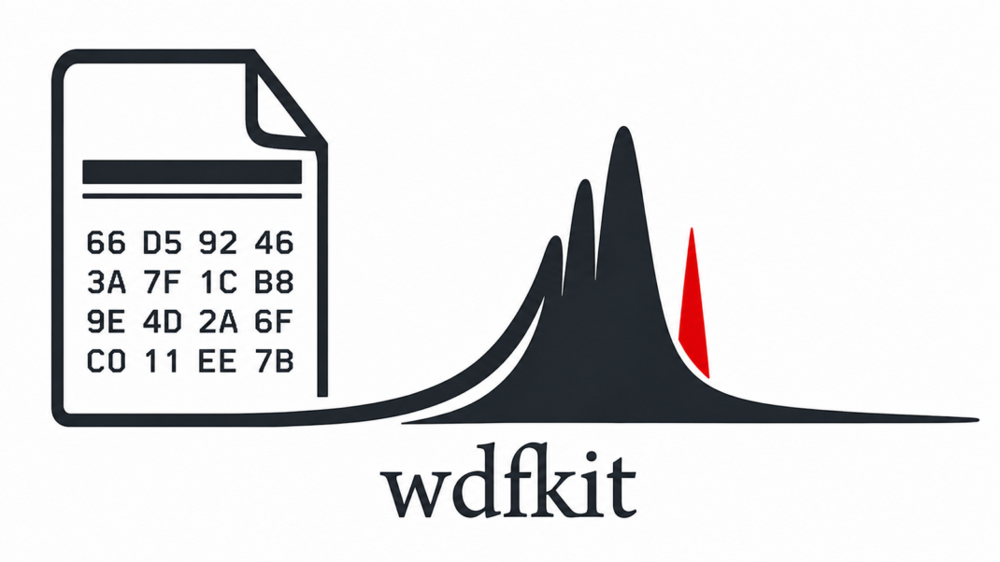

Getting started
{kind=link}

wdfkit reads Renishaw WiRE .wdf spectra into xarray.DataArray
objects. It handles single spectra, line scans, depth/time series, and
full raster maps—normalising dimension names and spectral axes so
downstream analysis code can treat every file type the same way.
The project is inspired by spectrapy by Dejan Skrelic—an earlier tool that shaped how spectroscopy users treat this kind of data.
Installation
The quickest way to install is via pip:
pip install wdfkit
For a conda-based development setup, see the README.
Reading a .wdf file
WDFReader loads the file and returns an
(xr.DataArray, image_or_None) pair. It can be unpacked directly:
from wdfkit import WDFReader
data, image = WDFReader("measurement.wdf")
# or keep as an object
reader = WDFReader("measurement.wdf")
data = reader.data # xr.DataArray
image = reader.image # white-light image, or None
Optional keyword arguments include spectral_dim (selects the physical
axis type stored as metadata), chunks (lazy/Dask chunking), verbose,
and time_coord — see the class docstring for details.
DataArray format
Every DataArray produced by wdfkit has a data_type attribute that
identifies its canonical shape, and a kind attribute that names the
exact acquisition mode.
The spectral dimension is always called "spectral". The spectral
coordinate carries units and long_name attributes that describe the
physical axis (e.g. units="1/cm", long_name="RamanShift").
|
Dims |
|
Notes |
|---|---|---|---|
|
|
|
One spectrum. |
|
|
|
|
|
|
|
|
Example — inspecting a map:
data, _ = WDFReader("map.wdf")
print(data.dims) # ('row', 'column', 'spectral')
print(data.attrs["data_type"]) # 'grid'
print(data["spectral"].attrs) # {'units': '1/cm', 'long_name': 'RamanShift'}
print(data["row"].values) # physical y positions in µm
print(data["column"].values) # physical x positions in µm
Example — inspecting a depth series:
data, _ = WDFReader("depth_series.wdf")
print(data.dims) # ('point', 'spectral')
print(data.attrs["data_type"]) # 'sequence'
print(data["z"].values) # physical Z positions from ORGN
print(data["time"].values) # elapsed time in seconds, if present
Bulk loading and the catalog
read() loads the same data but returns only the
DataArray (no white-light image):
from wdfkit import read
data = read("measurement.wdf")
classify() returns a small summary dict (scan kind,
counts, flags) without reading the spectral payload — useful for
scripting over folders of .wdf files:
from wdfkit import classify
info = classify("measurement.wdf")
print(info["kind"]) # e.g. 'raster_rowmajor'
catalog() scans a directory and returns a
Catalog object that lists every .wdf file and
lets you load individual files by index:
from wdfkit import catalog
cat = catalog("./data/")
print(cat) # table of all files with kind, shape, …
data = cat.load(0).data